sequential evaluation · 11 models · 40 eval days · 5 assets
| model | split | rmse | rmse_liquid | rmse_illiquid | mae | butterfly_pct | calendar_pct |
|---|---|---|---|---|---|---|---|
| bspline_data | ctx_8 | 0.21484 | 0.19358 | 0.22033 | 0.18704 | 11.90687 | 42.07029 |
| bspline_data | extrapolation | 0.22033 | 0.22033 | 0.19473 | 11.90687 | 42.07029 | |
| bspline_factored_graph | ctx_8 | 0.05313 | 0.05134 | 0.05361 | 0.04113 | 1.06183 | 13.49725 |
| bspline_factored_graph | extrapolation | 0.05361 | 0.05361 | 0.04140 | 1.06183 | 13.49725 | |
| bspline_learned_graph | ctx_8 | 0.05993 | 0.05847 | 0.06032 | 0.04699 | 1.28034 | 22.43341 |
| bspline_learned_graph | extrapolation | 0.06032 | 0.06032 | 0.04728 | 1.28034 | 22.43341 | |
| bspline_temporal | ctx_8 | 0.05528 | 0.05415 | 0.05558 | 0.04274 | 3.60069 | 22.73742 |
| bspline_temporal | extrapolation | 0.05558 | 0.05558 | 0.04302 | 3.60069 | 22.73742 | |
| bspline_temporal_graph | ctx_8 | 0.05380 | 0.05201 | 0.05429 | 0.04151 | 1.23004 | 17.86390 |
| bspline_temporal_graph | extrapolation | 0.05429 | 0.05429 | 0.04185 | 1.23004 | 17.86390 | |
| bspline_tiered_graph | ctx_8 | 0.05391 | 0.05251 | 0.05428 | 0.04170 | 1.95582 | 19.40081 |
| bspline_tiered_graph | extrapolation | 0.05428 | 0.05428 | 0.04198 | 1.95582 | 19.40081 | |
| kalman | ctx_8 | 0.00676 | 0.00477 | 0.00721 | 0.00442 | 0.07065 | 0.20408 |
| kalman | extrapolation | 0.00721 | 0.00721 | 0.00471 | 0.07065 | 0.20408 | |
| ssvi_temporal | ctx_8 | 0.03287 | 0.03148 | 0.03324 | 0.02554 | 0.00000 | 0.11345 |
| ssvi_temporal | extrapolation | 0.03324 | 0.03324 | 0.02566 | 0.00000 | 0.11345 | |
| ssvi_temporal_graph | ctx_8 | 0.03778 | 0.03652 | 0.03812 | 0.02981 | 0.00000 | 0.11518 |
| ssvi_temporal_graph | extrapolation | 0.03812 | 0.03812 | 0.02996 | 0.00000 | 0.11518 | |
| svi_temporal | ctx_8 | 0.03426 | 0.03575 | 0.03384 | 0.02478 | 0.00000 | 14.75632 |
| svi_temporal | extrapolation | 0.03384 | 0.03384 | 0.02440 | 0.00000 | 14.75632 | |
| svi_temporal_graph | ctx_8 | 0.03407 | 0.03659 | 0.03335 | 0.02625 | 0.00000 | 8.73914 |
| svi_temporal_graph | extrapolation | 0.03335 | 0.03335 | 0.02581 | 0.00000 | 8.73914 |
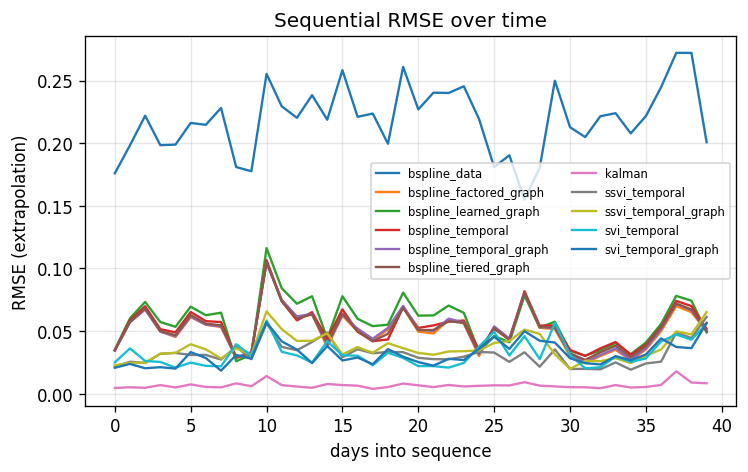
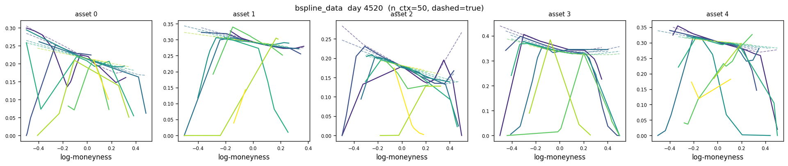
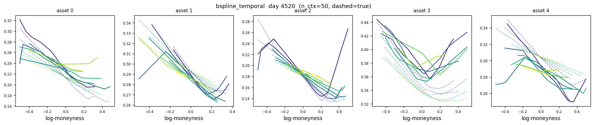
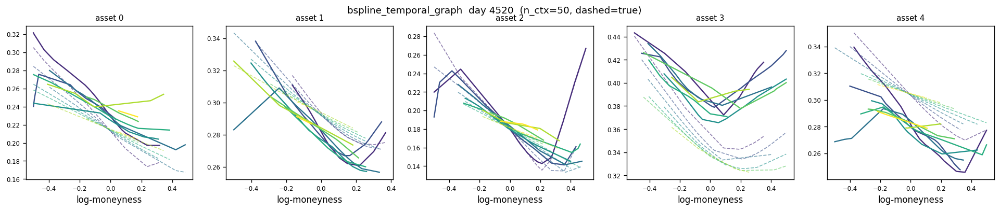
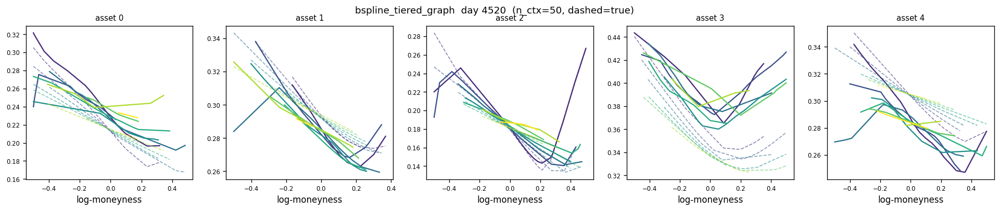
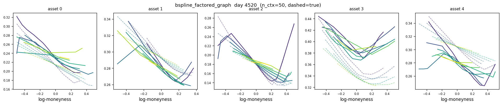
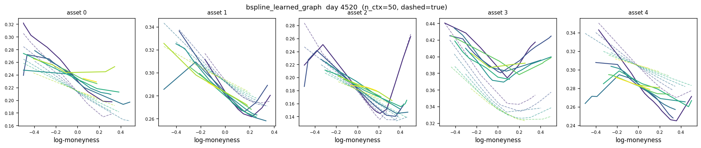
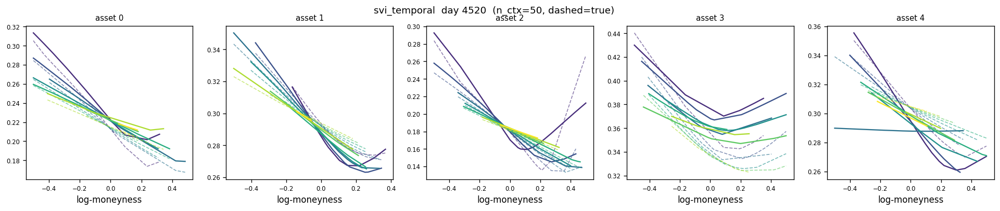
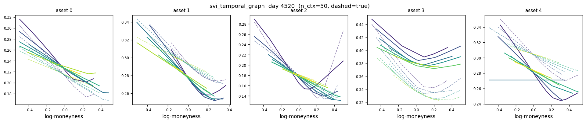
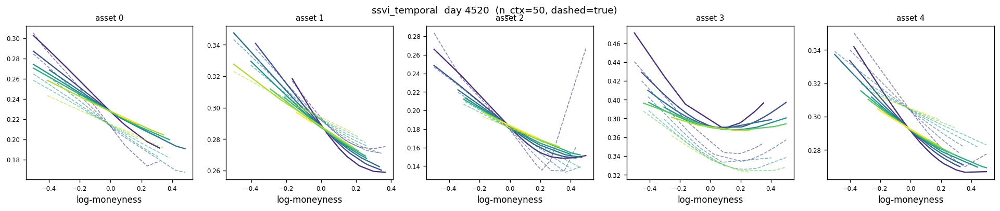
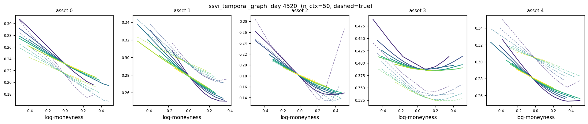
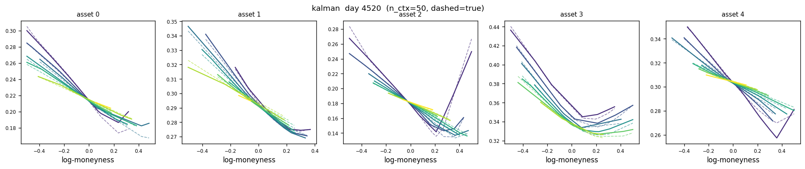